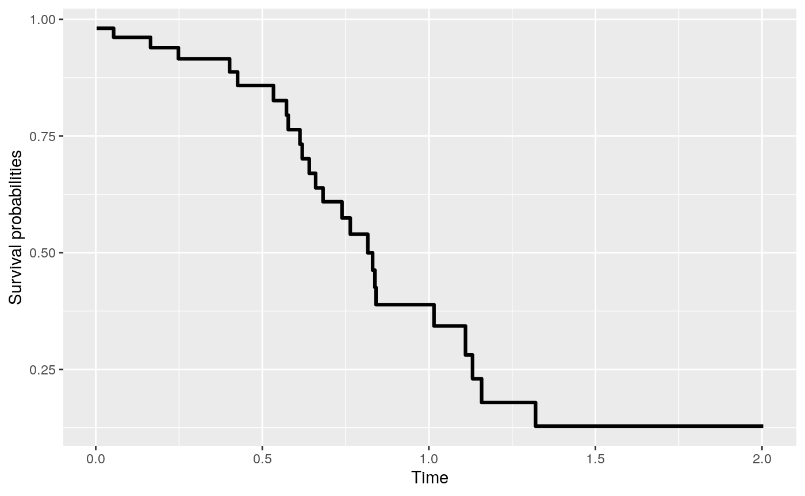

rocTree packagevignettes/rocTree-tree.Rmd
rocTree-tree.RmdIn this vignette, we demonstrate how to use the rocTree function in rocTree package to fit the proposed Receiver Operating Characteristic (ROC) guided survival tree.
We will demonstrate the usage of rocTree function with a simulated data prepared by the simu function.
> library(rocTree)
> set.seed(0)
> dat <- simu(n = 100, cen = 0.25, sce = 2.3, summary = TRUE)
Summary results:
Number of subjects: 100
Number of subjects experienced death: 78
Number of covariates: 2
Time independent covaraites: z1.
Time dependent covaraites: z2.
Number of unique observation times: 100
Median survival time: 0.6822997
> head(dat)
id Time death z1 z2 k b
1 1 0.002600386 0 1.609865 0.7828513 1.896697 1.604933
2 1 0.004555408 0 1.613574 0.7828513 1.896697 1.604933
3 1 0.020158569 0 1.643168 0.7828513 1.896697 1.604933
4 1 0.027369456 0 1.656845 0.7828513 1.896697 1.604933
5 1 0.047650218 0 1.695311 0.7828513 1.896697 1.604933
6 1 0.053670175 0 1.706729 0.7828513 1.896697 1.604933rocTree functionThe complete list of arguments in rocTree are as follow:
> args(rocTree)
function (formula, data, id, subset, ensemble = TRUE, splitBy = c("dCON",
"CON"), control = list())
NULLThe arguments are as follows
formula is a formula object, with the response on the left of a ~ operator, and the predictors on the right. The response must be a survival object returned by the function Surv from the survival package.data is an optional data frame to interpret the variables occurring in the formula.id is an optional vector used to identify the longitudinal observations of subject’s id. The length of id should be the same as the total number of observations. If id is missing, then each row of data represents a distinct observation from subjects and all covariates are treated as a baseline covariate.subset is an optional vector specifying a subset of observations to be used in the fitting process.ensemble is an optional logical value. If TRUE (default), ensemble methods will be fitted. Otherwise, the survival tree will be fitted.splitBy is a character string specifying the splitting algorithm. The available options are CON and dCON corresponding to the splitting algorithm based on the total concordance measure or the difference in concordance measure, respectively. The default value is dCON.control is a list of control parameters.control optionsThe argument control defaults to a list with the following values:
tau is the maximum follow-up time; default value is the 90th percentile of the unique observed survival times.maxNode is the maximum node number allowed to be in the tree; the default value is 500.numFold is the number of folds used in the cross-validation. When numFold > 0, the survival tree will be pruned; when numFold = 0, the unpruned survival tree will be presented. The default value is 10.h is the smoothing parameter used in the Kernel; the default value is tau / 20.minSplitTerm is the minimum number of baseline observations in each terminal node; the default value is 15.minSplitNode is the minimum number of baseline observations in each splitable node; the default value is 30.disc is a logical vector specifying whether the covariates in formula are discrete (TRUE) or continuous (FALSE). The length of disc should be the same as the number of covariates in formula. When not specified, the rocTree() function assumes continuous covariates for all.K is the number of time points on which the concordance measure is computed. A less refined time grids (smaller K) generally yields faster speed but a very small K is not recommanded. The default value is 20.We first load the survival package to enable the Surv() function, which we will use to specify the survival response. The fully grown (un-pruned) time-invariant survival tree can be constructed as follow:
> library(survival)
> system.time(fit <- rocTree(Surv(Time, death) ~ z1 + z2, id = id, data = dat,
+ ensemble = FALSE, control = list(numFold = 0)))
user system elapsed
0.028 0.000 0.027 The function rocTree returns an object of S3 class with the following major components:
Frame is a data frame describe the resulting tree. The columns arep indicate which covariate was split at the node.left indicate the row number for the left child (if the current node splittable).right indicate the row number for the right child (if the current node splittable).cutVal indicate the covariate value (after transformation) being split at the node.cutOrd indicate the rank of the covariate value being split at the node.nd indicates the node number in display.is.terminal describe the node characteristic; 0 if a node is internal, 1 if a node is a terminal node.The time-invariant survival tree can be printed directly or with the generic function print.
> fit
ROC-guided survival tree
node), split
* denotes terminal node
Root
¦--2) z1 <= 0.52736
¦ ¦--4) z2 <= 0.64179
¦ ¦ ¦--8) z2 <= 0.29353*
¦ ¦ °--9) z2 > 0.29353*
¦ °--5) z2 > 0.64179*
°--3) z1 > 0.52736
¦--6) z2 <= 0.67164*
°--7) z2 > 0.67164* The survival tree is printed in the structure similar to that in the data.tree package.
The survival tree can also be plotted with the GraphViz/DiagrammeR engine via the generic function plot.
> plot(fit)plot feature also allows the following arguments adopted from the Graphviz/DiagrammeR environment to be passed to option:
type is an optional character string specifying what to plot. The available options are tree for plotting survival tree (default), survival for plotting the estimated survival probabilities for the terminal nodes, and hazard for plotting the estimated hazard for the terminal nodes. The following options are available only when type = tree.output is a string specifying the output type. The possible values are graph and visNetwork; graph (the default) renders the graph using the grViz function, and visNetwork renders the graph using the visnetwork function.digits the number of digits to print.rankdir is a character string specifying the direction of the tree flow. The available options are top-to-bottom (TB), bottom-to-top (BT), left-to-right (LR), and right-to-left (RL); the default value is TB.shape is a character string specifying the shape style. Some of the available options are ellipse, oval, rectangle, square, egg, plaintext, diamond, and triangle. The default value is ellipse.nodeOnly is a logical value indicating whether to display only the node number; the default value is TRUE.savePlot is a logical value indicating whether the plot will be saved (exported); the default value is FALSE.file_name is a character string specifying the name of the plot when savePlot = TRUE. The file name should include its extension. The default value is pic.pdf.file_type is a character string specifying the type of file to be exported. Options for graph files are: png, pdf, svg, and ps. The default value is pdf.The following codes illustrate some of the different options.
> plot(fit, rankdir = "LR", shape = "rect", digits = 2)> plot(fit, shape = "egg", nodeOnly = TRUE)> plot(fit, output = "visNetwork", digits = 2)Pruning reduces the complexity of the final classifier, and hence improves predictive accuracy by the reduction of overfitting. Setting prune = TRUE in the control list will prune the survival tree. In the following example, we used five-fold cross-validation to choose the tuning parameter in the concordance-complexity measure:
> system.time(fit2 <- rocTree(Surv(Time, death) ~ z1 + z2, id = id, data = dat,
+ ensemble = FALSE, control = list(numFold = 10)))
user system elapsed
0.056 0.000 0.053
> fit2
ROC-guided survival tree
node), split
* denotes terminal node
Root
¦--2) z1 <= 0.52736*
°--3) z1 > 0.52736*
> plot(fit2)fit.
The time-invariant partition considered allows a sparse model and an easy interpretation of the decision rule. At each fixed time \(t\), the tree partitions the survivor population and predicts the instantaneous failure risk. Thus the interpretation at a fixed time point is along the same line as classification and regression trees. Since the risk within each terminal node changes with time, it is essential to look at the hazard curves of each terminal The smoothed hazard estimates at terminal nodes can be easily plotted with the generic function plot with type = "survival" or type = "hazard". The feature is demonstrated below.
> plot(fit2, type = "hazard")Suppose we have a new data that is generated as below:
> newdat <- dplyr::tibble(Time = sort(unique(dat$Time)),
+ z1 = 1 * (Time < median(Time)),
+ z2 = 0.5)
> newdat
# A tibble: 100 x 3
Time z1 z2
<dbl> <dbl> <dbl>
1 0.00260 1 0.5
2 0.00456 1 0.5
3 0.0202 1 0.5
4 0.0274 1 0.5
5 0.0477 1 0.5
6 0.0537 1 0.5
7 0.0564 1 0.5
8 0.0572 1 0.5
9 0.0587 1 0.5
10 0.0589 1 0.5
# … with 90 more rowsThe predicted survival curve can be plotted with the following codes.
> (pred <- predict(fit2, newdat, type = "survival"))
Fitted survival probabilities:
Time Survival
1 0.002600386 0.980953
2 0.004555408 0.980953
3 0.020158569 0.980953
4 0.027369456 0.980953
5 0.047650218 0.980953
> plot(pred)
> (pred <- predict(fit2, newdat, type = "hazard"))
Fitted cumulative hazard:
Time hazard
1 0.05336918 0.2931508
2 0.12010736 0.1140868
3 0.18684555 0.2628478
4 0.25358374 0.3424780
5 0.32032193 0.0000000
> plot(pred)